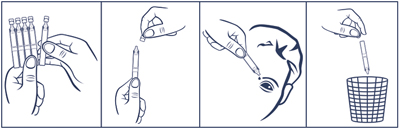
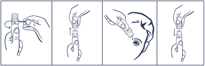

|
 |
| СТЕЛФРИН СУПРА (STELFRIN SUPRA) phenylephrine капли глазные | ||||||
|
Клинико-фармакологическая группа: Альфа-адреномиметик для местного применения в офтальмологии Номер и дата регистрации: ЛП-№(001063)-(РГ-RU) от 25.07.22 Код ATX: S01FB01 |
Владелец регистрационного удостоверения: зарегистрировано и произведено Представительство: | |||||
Форма выпуска, состав и упаковка Капли глазные в виде прозрачной, от бесцветной до желтого или желто-коричневого цвета жидкости.
Вспомогательные вещества: пропиленгликоль 300 (макрогол 300) - 19 мг, натрия гиалуронат - 2.7 мг, вода д/и - до 1 мл. 10 мл - флаконы пластмассовые (1) с капельным дозатором - пачки картонные. | ||||||
| ||||||
Описание препарата основано на официально утвержденной инструкции по применению и утверждено компанией-производителем для издания 2023 г. | ||||||
Фармакологическое действие |
Фармакокинетика |
Показания |
Режим дозирования |
Побочное действие |
Противопоказания |
Беременность и лактация |
Особые указания |
Передозировка |
Лекарственное взаимодействие |
Условия хранения и сроки годности |
Условия реализации
Фармакологическое действие
Фенилэфрин - симпатомиметик. Обладает выраженной альфа-адренергической активностью. При местном применении в офтальмологии вызывает расширение зрачка, улучшает отток внутриглазной жидкости и сужает сосуды конъюнктивы. Фенилэфрин обладает выраженным стимулирующим действием на постсинаптические α-адренорецепторы, оказывает очень слабое воздействие на β-адренорецепторы сердца. Препарат обладает вазоконстрикторным действием, подобным действию норэпинефрина (норадреналина), при этом у него практически отсутствует хронотропное и ионотропное воздействие на сердце. Вазопрессорный эффект фенилэфрина слабее, чем у норадреналина, но является более длительным. Вызывает вазоконстрикцию через 30-90 с после инстилляции, длительность - 2-6 ч. После инстилляции фенилэфрин сокращает дилататор зрачка и гладкие мышцы артериол конъюнктивы, тем самым вызывая расширение зрачка. Мидриаз наступает в течение 10-60 мин после однократной инстилляции. Мидриаз сохраняется после инстилляции 2.5% раствора в течение 2 ч. Мидриаз, вызываемый фенилэфрином, не сопровождается циклоплегией. Фармакокинетика
Фенилэфрин легко проникает в ткани глаза, Cmax в плазме достигается через 10-20 мин после инстилляции в глаз. Выделяется почками в неизмененном виде (<20%) или в виде неактивных метаболитов. Показания
Режим дозирования
При иридоциклитах препарат применяют для предотвращения развития и разрыва уже образовавшихся задних синехий; для снижения экссудации в переднюю камеру глаза. С этой целью 1 каплю препарата закапывают в конъюнктивальный мешок больного глаза (глаз) 2-3 раза/сут. При проведении офтальмоскопии применяют однократные инстилляции препарата. Как правило, для создания мидриаза достаточно инстилляции 1 капли препарата в конъюнктивальный мешок. Максимальный мидриаз достигается через 15-30 мин и сохраняется в течение 1-3 ч. В случае необходимости поддержания мидриаза в течение длительного времени через 1 ч возможна повторная инстилляция препарата. Для проведения диагностических процедур однократная инстилляция препарата применяется:
Для снятия спазма аккомодации у детей с 6 лет и взрослых препарат инстиллируют по 1 капле в каждый глаз на ночь ежедневно в течение 4 недель. Порядок работы с тюбиком-капельницей  1. Отделить одну тюбик-капельницу. 2. Вскрыть тюбик-капельницу (убедившись, что раствор находится в нижней части тюбика-капельницы, вращающими движениями повернуть и отделить клапан). 3. Закапать необходимое количество препарата в глаза. Доза, содержащаяся в тюбике-капельнице, достаточна для одного закапывания в оба глаза. После однократного использования тюбик-капельницу следует выбросить, даже если осталось содержимое. Порядок работы с флаконом, укомплектованным капельным дозатором  1. Удалить предохранительное кольцо перед первым использованием флакона. 2. Осторожно снять колпачок с флакона. Не касаясь дозатора, перевернуть флакон дозатором вниз, зафиксировав между большим и указательным пальцами. Перед началом использования рекомендуется прокачать дозатор до появления первой капли препарата путем нескольких нажатий указательным пальцем сверху на флакон. 3. Запрокинуть голову назад, расположить дозатор флакона над глазом и указательным пальцем одной руки оттянуть нижнее веко вниз. Слегка надавить на флакон и закапать необходимое количество раствора в конъюнктивальный мешок глаза. Избегать контактов наконечника открытого флакона с поверхностью глаза и руками. 4. После использования надеть колпачок на флакон. После вскрытия флакона препарат можно использовать в течение всего срока годности. По истечении этого срока препарат следует уничтожить. При видимых повреждениях флакона применять препарат не следует. Побочное действие
Со стороны органа зрения: конъюнктивит, периорбитальный отек. В некоторых случаях пациенты отмечают ощущение жжения в начале применения, затуманивание зрения, раздражение, ощущение дискомфорта в глазу, слезотечение, увеличение внутриглазного давления. Фенилэфрин может вызывать реактивный миоз на следующий день после применения. Повторные инстилляции препарата в это время могут приводить к менее выраженному мидриазу, чем наблюдавшемуся ранее. Этот эффект чаще проявляется у пожилых пациентов. Вследствие значительного сокращения мышцы, расширяющей зрачок, через 30-45 мин после инстилляции под воздействием фенилэфрина во влаге передней камеры глаза могут обнаруживаться частички пигмента из пигментного листка радужной оболочки. Взвесь в камерной влаге необходимо дифференцировать с проявлениями переднего увеита либо с попаданием форменных элементов крови во влагу передней камеры. Системные реакции Со стороны кожи и ее придатков: контактный дерматит. Со стороны сердечно-сосудистой системы: ощущение сердцебиения, тахикардия, аритмия, повышение АД, желудочковая аритмия, рефлекторная брадикардия, окклюзия коронарных артерий, эмболия легочной артерии. Противопоказания
С осторожностью: сахарный диабет (риск повышения АД, связанного с нарушением вегетативной регуляции); одновременное применение с ингибиторами МАО (в т.ч. в течение 21 дня после прекращения их применения); серповидно-клеточная анемия; ношение контактных линз; после оперативных вмешательств (снижение заживления вследствие гипоксии конъюнктивы). Применение при беременности и кормлении грудью
Действие фенилэфрина у беременных женщин недостаточно изучено, поэтому применять препарат у этой категории пациентов возможно только, если ожидаемая польза для матери превышает потенциальный риск для плода или ребенка. Неизвестно, выделяется ли препарат с грудным молоком. У животных на поздних сроках беременности фенилэфрин вызывал задержку роста плода и стимулировал раннее начало родов. При назначении в период лактации грудное вскармливание рекомендуется прекратить на время лечения. Особые указания
Превышение рекомендуемой дозы 2.5% раствора у пациентов с травмами, заболеваниями глаза или его придатков, в послеоперационном периоде, или со сниженной слезопродукцией может приводить к увеличению абсорбции фенилэфрина и развитию системных побочных эффектов. Препарат не содержит в своем составе консерванта, что позволяет избежать нежелательного воздействия консерванта на внешние ткани глаза, конъюнктиву и роговицу, а также исключает риск развития аллергических реакций на консервант. Влияние на способность к управлению транспортными средствами и механизмами После применения препарата вследствие изменения аккомодации и ширины зрачка возможно снижение остроты зрения, поэтому до его восстановления не рекомендуется управлять транспортными средствами и заниматься потенциально опасными видами деятельности, требующими повышенной концентрации внимания и быстроты психомоторных реакций. Передозировка
Симптомы: беспокойство, нервозность, головокружение, потливость, рвота, ощущение сердцебиения, слабое или поверхностное дыхание. Лечение: при возникновении системного действия фенилэфрина купировать нежелательные явления можно путем использования альфа-адреноблокаторов, например, 5-10 мг фентоламина в/в. При необходимости можно повторить инъекцию. Лекарственное взаимодействие
Мидриатический эффект фенилэфрина усиливается при его применении в комбинации с местным применением атропина. Из-за усиления вазопрессорного действия возможно развитие тахикардии. Применение фенилэфрина с ингибиторами МАО, а также в течение 21 дня после прекращения их применения должно осуществляться с осторожностью, т.к. в этом случае имеется возможность неконтролируемого повышения АД. Вазопрессорное действие альфа-адреномиметиков может также потенцироваться при одновременном применении с трициклическими антидепрессантами, пропранололом, резерпином, гуанетидином, метилдопой и м-холиноблокаторами. Фенилэфрин может потенцировать угнетение сердечно-сосудистой деятельности при ингаляционном наркозе. Одновременное применение с другими адреномиметиками и симпатомиметиками может усиливать влияние фенилэфрина на сердечно-сосудистую систему. Применение фенилэфрина может вызывать ослабление сопутствующей гипотензивной терапии и приводить к увеличению АД, тахикардии. |
||||||
Вернуться наверх |
||||||
Copyright © Справочник Видаль «Лекарственные препараты в России», Москва, Россия